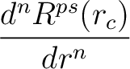
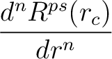
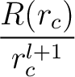
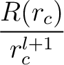
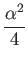

Next: A..4 Numerical solution
Up: A. Atomic Calculations
Previous: A..2 Fully relativistic case
Contents
The full relativistic KS equations
is be transformed into an equation for the large component only
and averaged over spin-orbit components. In atomic units
(Rydberg:
 = 1, m = 1/2, e2 = 2):
= 1, m = 1/2, e2 = 2):
-  + +   + M(r) + M(r) V(r) - V(r) -    Rnl(r) Rnl(r) |
|
|
|
-     + +     = 0,  = 0, |
|
|
(12) |
where
 = 1/137.036 is the fine-structure constant,
= 1/137.036 is the fine-structure constant,
  = - 1 is the degeneracy-weighted average value
of the Dirac's for the two spin-orbit-split levels, M(r) is
defined as
 = - 1 is the degeneracy-weighted average value
of the Dirac's for the two spin-orbit-split levels, M(r) is
defined as
|
M(r) = 1 - V(r) - .
|
(13) |
The charge density is defined as in the nonrelativistic case:
Filippo Spiga
2016-10-04
 .
.